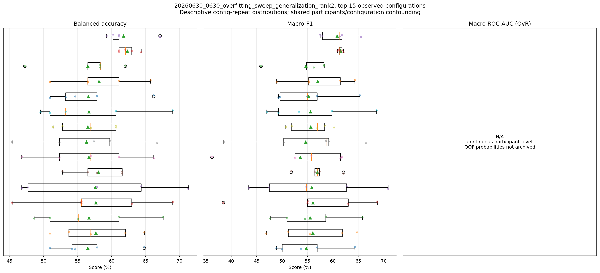
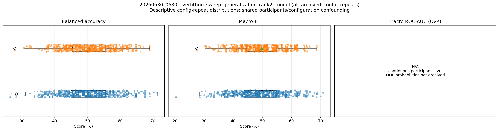
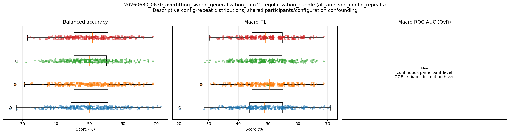
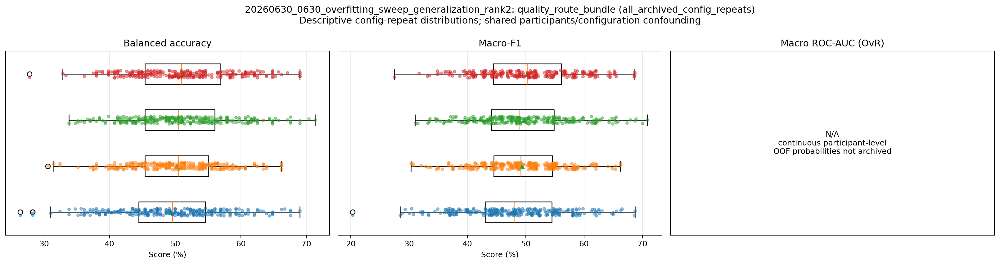
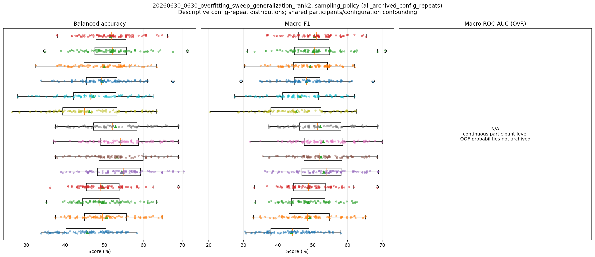
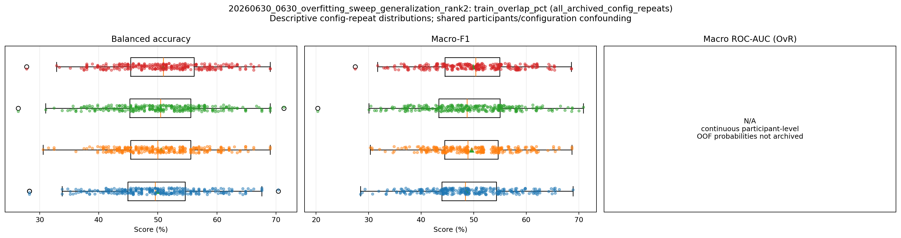
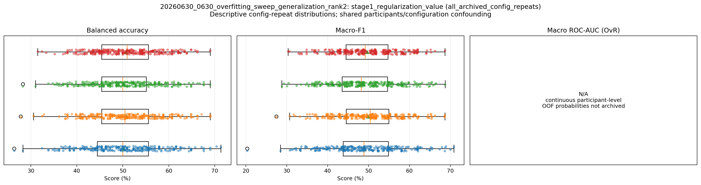
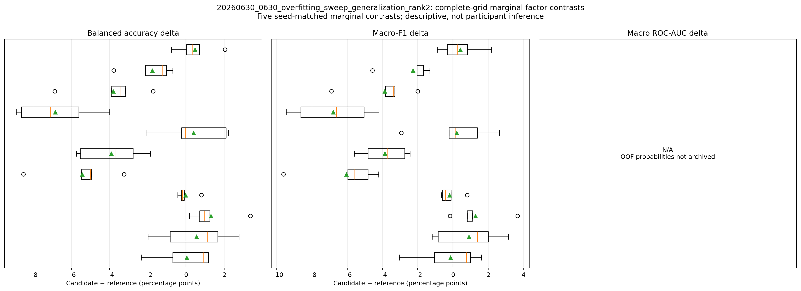

232 configurations × five matched repeat seeds; stress-test generalization/sampling hypotheses and compare frozen historical references
| rank | config_or_model | model | subject_BA_mean_sd_percent | subject_BA_repeat_t_CI95_percent | subject_macro_F1_mean_sd_percent | subject_macro_F1_repeat_t_CI95_percent | subject_macro_ROC_AUC | ROC_AUC_applicability | scientific_role |
|---|---|---|---|---|---|---|---|---|---|
| 1 | ref_20260625_top1_s1_122 | inception_time | 62.3 ± 1.4 | [60.6, 64.0] | 61.5 ± 0.5 | [60.9, 62.0] | N/A | continuous participant-level OOF probabilities not archived | historical_hypothesis_generation_only |
| 2 | ref_20260625_top2_s1_102 | inception_time | 61.8 ± 3.1 | [57.9, 65.6] | 60.8 ± 3.3 | [56.7, 64.9] | N/A | continuous participant-level OOF probabilities not archived | historical_hypothesis_generation_only |
| 3 | gen_212 | small_inception_time | 58.1 ± 5.6 | [51.2, 65.1] | 57.0 ± 6.0 | [49.6, 64.5] | N/A | continuous participant-level OOF probabilities not archived | historical_hypothesis_generation_only |
| 4 | gen_080 | inception_time | 58.1 ± 3.7 | [53.4, 62.7] | 56.9 ± 3.6 | [52.4, 61.5] | N/A | continuous participant-level OOF probabilities not archived | historical_hypothesis_generation_only |
| 5 | gen_030 | inception_time | 57.7 ± 5.7 | [50.6, 64.8] | 56.0 ± 7.4 | [46.9, 65.2] | N/A | continuous participant-level OOF probabilities not archived | historical_hypothesis_generation_only |
| 6 | gen_066 | inception_time | 57.7 ± 8.9 | [46.6, 68.7] | 56.1 ± 11.4 | [41.9, 70.3] | N/A | continuous participant-level OOF probabilities not archived | historical_hypothesis_generation_only |
| 7 | gen_074 | inception_time | 57.6 ± 10.6 | [44.4, 70.7] | 55.8 ± 11.1 | [42.0, 69.7] | N/A | continuous participant-level OOF probabilities not archived | historical_hypothesis_generation_only |
| 8 | gen_136 | small_inception_time | 56.7 ± 8.1 | [46.6, 66.7] | 55.6 ± 8.7 | [44.7, 66.5] | N/A | continuous participant-level OOF probabilities not archived | historical_hypothesis_generation_only |
| 9 | gen_044 | inception_time | 56.7 ± 7.7 | [47.1, 66.3] | 55.5 ± 7.1 | [46.7, 64.3] | N/A | continuous participant-level OOF probabilities not archived | historical_hypothesis_generation_only |
| 10 | gen_093 | inception_time | 56.7 ± 7.5 | [47.3, 66.0] | 53.5 ± 10.5 | [40.6, 66.5] | N/A | continuous participant-level OOF probabilities not archived | historical_hypothesis_generation_only |
| 11 | gen_164 | small_inception_time | 56.6 ± 5.9 | [49.2, 64.0] | 55.2 ± 6.5 | [47.1, 63.3] | N/A | continuous participant-level OOF probabilities not archived | historical_hypothesis_generation_only |
| 12 | gen_121 | small_inception_time | 56.5 ± 4.3 | [51.1, 61.8] | 55.6 ± 4.1 | [50.5, 60.7] | N/A | continuous participant-level OOF probabilities not archived | historical_hypothesis_generation_only |
| 13 | ref_20260608_top2_s1_091 | inception_time | 56.5 ± 5.6 | [49.6, 63.4] | 54.7 ± 5.2 | [48.3, 61.1] | N/A | continuous participant-level OOF probabilities not archived | historical_hypothesis_generation_only |
| 14 | gen_024 | inception_time | 56.5 ± 5.3 | [49.9, 63.0] | 54.8 ± 6.2 | [47.0, 62.5] | N/A | continuous participant-level OOF probabilities not archived | historical_hypothesis_generation_only |
| 15 | gen_094 | inception_time | 56.3 ± 8.0 | [46.4, 66.2] | 54.6 ± 10.7 | [41.4, 67.9] | N/A | continuous participant-level OOF probabilities not archived | historical_hypothesis_generation_only |
rank): Ordinal position after applying the table's declared sorting rule. Formula: N/A — identifier, provenance, configuration, status, or other non-arithmetic field.config_or_model): Direct identifier, provenance, configuration, grouping, or status value. Formula: N/A — identifier, provenance, configuration, status, or other non-arithmetic field.model): Direct identifier, provenance, configuration, grouping, or status value. Formula: N/A — identifier, provenance, configuration, status, or other non-arithmetic field.subject_BA_mean_sd_percent): Compact mean and sample-standard-deviation display for Macro-average recall across the K declared classes. Formula: display = 100 * mean +/- 100 * sqrt[sum_i (x_i - mean)^2 / (n - 1)]subject_BA_repeat_t_CI95_percent): Reported 95% confidence bound or interval for Macro-average recall across the K declared classes. Formula: repeat CI95 = 100 * (mean +/- t_(0.975,n-1) * sample_SD / sqrt(n))subject_macro_F1_mean_sd_percent): Compact mean and sample-standard-deviation display for Unweighted mean of the K class-specific F1 scores. Formula: display = 100 * mean +/- 100 * sqrt[sum_i (x_i - mean)^2 / (n - 1)]subject_macro_F1_repeat_t_CI95_percent): Reported 95% confidence bound or interval for Unweighted mean of the K class-specific F1 scores. Formula: repeat CI95 = 100 * (mean +/- t_(0.975,n-1) * sample_SD / sqrt(n))subject_macro_ROC_AUC): Area under the empirical receiver-operating-characteristic curve. Formula: ROC-AUC = integral_0^1 TPR(FPR) dFPR (empirical trapezoidal area)ROC_AUC_applicability): Direct method, applicability, reason, metric-roster, or cluster-unit provenance for the reported statistic. Formula: N/A — identifier, provenance, configuration, status, or other non-arithmetic field.scientific_role): Direct identifier, provenance, configuration, grouping, or status value. Formula: N/A — identifier, provenance, configuration, status, or other non-arithmetic field.| source_study | parameter_group | parameter | unique_value_count | observed_values | parameter_role | comparison_interpretation |
|---|---|---|---|---|---|---|
| 20260630_0630_overfitting_sweep_generalization_rank2 | architecture | model | 2 | ["inceptiontime", "small_inceptiontime"] | varied | marginal_descriptive_not_single_factor_causal |
| 20260630_0630_overfitting_sweep_generalization_rank2 | architecture | resolved_model | 2 | ["inception_time", "small_inception_time"] | varied | marginal_descriptive_not_single_factor_causal |
| 20260630_0630_overfitting_sweep_generalization_rank2 | input_and_windowing | extra_input | 1 | ["0"] | fixed | fixed_within_archive |
| 20260630_0630_overfitting_sweep_generalization_rank2 | input_and_windowing | window_sec | 1 | ["5"] | fixed | fixed_within_archive |
| 20260630_0630_overfitting_sweep_generalization_rank2 | input_and_windowing | hop_sec | 2 | ["2.5", "3.5"] | varied | marginal_descriptive_not_single_factor_causal |
| 20260630_0630_overfitting_sweep_generalization_rank2 | input_and_windowing | overlap_pct | 2 | ["30", "50"] | varied | marginal_descriptive_not_single_factor_causal |
| 20260630_0630_overfitting_sweep_generalization_rank2 | input_and_windowing | max_windows_fraction | 1 | ["0.9"] | fixed | fixed_within_archive |
| 20260630_0630_overfitting_sweep_generalization_rank2 | input_and_windowing | train_overlap_pct | 3 | ["0", "30", "50"] | varied | marginal_descriptive_not_single_factor_causal |
| 20260630_0630_overfitting_sweep_generalization_rank2 | training_budget | cnn_epochs | 3 | ["10", "15", "50"] | varied | marginal_descriptive_not_single_factor_causal |
| 20260630_0630_overfitting_sweep_generalization_rank2 | training_budget | cnn_patience | 1 | ["0"] | fixed | fixed_within_archive |
| 20260630_0630_overfitting_sweep_generalization_rank2 | training_budget | early_stopping_source | 1 | ["none_final_epoch_fixed"] | fixed | fixed_within_archive |
| 20260630_0630_overfitting_sweep_generalization_rank2 | optimization_and_regularization | cnn_lr | 1 | ["0.001"] | fixed | fixed_within_archive |
| 20260630_0630_overfitting_sweep_generalization_rank2 | optimization_and_regularization | cnn_weight_decay | 4 | ["0.0001", "0.0005", "0.005", "0.01"] | varied | marginal_descriptive_not_single_factor_causal |
| 20260630_0630_overfitting_sweep_generalization_rank2 | optimization_and_regularization | cnn_dropout | 4 | ["-1", "0", "0.5", "0.7"] | varied | marginal_descriptive_not_single_factor_causal |
| 20260630_0630_overfitting_sweep_generalization_rank2 | optimization_and_regularization | cnn_label_smoothing | 4 | ["0", "0.1", "0.2", "0.3"] | varied | marginal_descriptive_not_single_factor_causal |
| 20260630_0630_overfitting_sweep_generalization_rank2 | optimization_and_regularization | loss_type | 1 | ["weighted_ce"] | fixed | fixed_within_archive |
| 20260630_0630_overfitting_sweep_generalization_rank2 | optimization_and_regularization | class_weight_mode | 1 | ["inverse_subject_count"] | fixed | fixed_within_archive |
| 20260630_0630_overfitting_sweep_generalization_rank2 | optimization_and_regularization | regularization_bundle | 6 | ["WD=0.0001; dropout=-1; LS=0", "WD=0.0005; dropout=0.5; LS=0.1", "WD=0.0005; dropout=0.7; LS=0.1", "WD=0.0005; dropout=0; LS=0.1", "WD=0.005; dropout=0.5; LS=0.2", "WD=0.01; dropout=0.5; LS=0.3"] | varied | marginal_descriptive_not_single_factor_causal |
| 20260630_0630_overfitting_sweep_generalization_rank2 | quality_feature_aggregation | sqi_mode | 2 | ["none", "top50_quality"] | varied | marginal_descriptive_not_single_factor_causal |
| 20260630_0630_overfitting_sweep_generalization_rank2 | quality_feature_aggregation | aggregation | 2 | ["mean_prob", "quality_weighted_mean"] | varied | marginal_descriptive_not_single_factor_causal |
| 20260630_0630_overfitting_sweep_generalization_rank2 | quality_feature_aggregation | manual_features | 1 | ["none"] | fixed | fixed_within_archive |
| 20260630_0630_overfitting_sweep_generalization_rank2 | quality_feature_aggregation | quality_route_bundle | 3 | ["SQI=none; aggregation=mean_prob", "SQI=top50_quality; aggregation=mean_prob", "SQI=top50_quality; aggregation=quality_weighted_mean"] | varied | marginal_descriptive_not_single_factor_causal |
| 20260630_0630_overfitting_sweep_generalization_rank2 | sampling | window_sampler | 3 | ["class_subject_balanced", "none", "subject_balanced"] | varied | marginal_descriptive_not_single_factor_causal |
| 20260630_0630_overfitting_sweep_generalization_rank2 | sampling | windows_per_subject_per_epoch | 4 | ["16", "32", "50%", "all"] | varied | marginal_descriptive_not_single_factor_causal |
| 20260630_0630_overfitting_sweep_generalization_rank2 | sampling | sampling_policy | 7 | ["sampler=class_subject_balanced; quota=16", "sampler=class_subject_balanced; quota=32", "sampler=class_subject_balanced; quota=50%", "sampler=none; quota=all", "sampler=subject_balanced; quota=16", "sampler=subject_balanced; quota=32", "sampler=subject_balanced; quota=50%"] | varied | marginal_descriptive_not_single_factor_causal |
| 20260630_0630_overfitting_sweep_generalization_rank2 | study_factor | overfit_stage | 2 | ["fixed_reference", "generalization"] | varied | marginal_descriptive_not_single_factor_causal |
| 20260630_0630_overfitting_sweep_generalization_rank2 | study_factor | stage1_screen_group | 2 | ["fixed_reference", "generalization"] | varied | marginal_descriptive_not_single_factor_causal |
| 20260630_0630_overfitting_sweep_generalization_rank2 | study_factor | stage1_regularization_factor | 4 | ["20260527", "20260608", "20260625", "generalization_grid"] | varied | marginal_descriptive_not_single_factor_causal |
| 20260630_0630_overfitting_sweep_generalization_rank2 | study_factor | stage1_regularization_value | 10 | ["g0056", "g0068", "s1_085", "s1_091", "s1_102", "s1_105", "s1_122", "s1_163", "wd0.005_do0.5_ls0.2", "wd0.01_do0.5_ls0.3"] | varied | marginal_descriptive_not_single_factor_causal |
| 20260630_0630_overfitting_sweep_generalization_rank2 | study_factor | is_reference | 2 | ["0", "1"] | varied | marginal_descriptive_not_single_factor_causal |
| 20260630_0630_overfitting_sweep_generalization_rank2 | data_roles | dynamic_data_mode | 1 | ["static_only"] | fixed | fixed_within_archive |
| 20260630_0630_overfitting_sweep_generalization_rank2 | data_roles | train_role_mode | 1 | ["static_only"] | fixed | fixed_within_archive |
| 20260630_0630_overfitting_sweep_generalization_rank2 | data_roles | validation_role_mode | 1 | ["static_only"] | fixed | fixed_within_archive |
| 20260630_0630_overfitting_sweep_generalization_rank2 | data_roles | test_role_mode | 1 | ["static_only"] | fixed | fixed_within_archive |
| 20260630_0630_overfitting_sweep_generalization_rank2 | data_roles | eval_protocol | 1 | ["stratified_group_kfold"] | fixed | fixed_within_archive |
| 20260630_0630_overfitting_sweep_generalization_rank2 | data_roles | n_splits | 1 | ["5"] | fixed | fixed_within_archive |
source_study): Direct identifier, provenance, configuration, grouping, or status value. Formula: N/A — identifier, provenance, configuration, status, or other non-arithmetic field.parameter_group): Direct identifier, provenance, configuration, grouping, or status value. Formula: N/A — identifier, provenance, configuration, status, or other non-arithmetic field.parameter): Direct identifier, provenance, configuration, grouping, or status value. Formula: N/A — identifier, provenance, configuration, status, or other non-arithmetic field.unique_value_count): Number of units satisfying the column's stated inclusion condition. Formula: count = sum_i 1[unit i satisfies the stated condition]observed_values): Persisted source-table value for `observed_values`; producer-specific semantics are not reinterpreted by the shared table renderer. Formula: N/A — direct persisted/source-defined value; the table renderer applies no additional arithmetic.parameter_role): Direct identifier, provenance, configuration, grouping, or status value. Formula: N/A — identifier, provenance, configuration, status, or other non-arithmetic field.comparison_interpretation): Direct identifier, provenance, configuration, grouping, or status value. Formula: N/A — identifier, provenance, configuration, status, or other non-arithmetic field.






